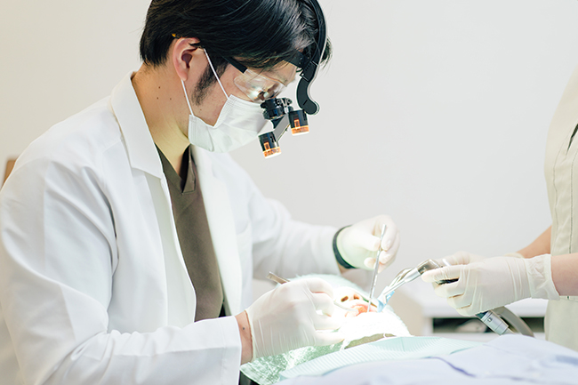
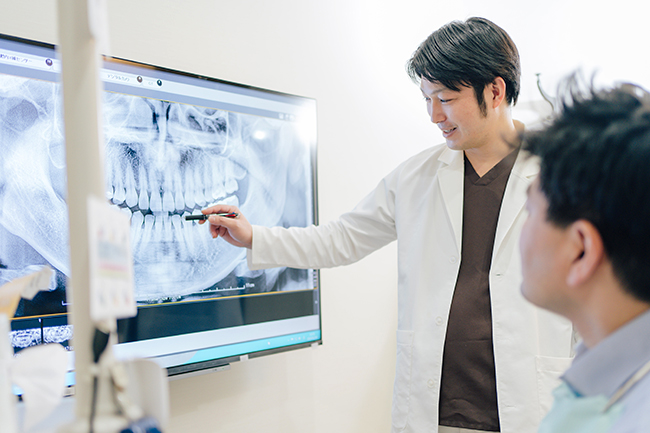
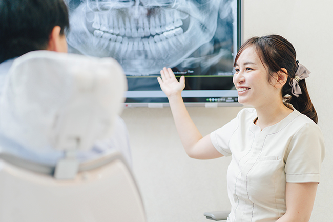
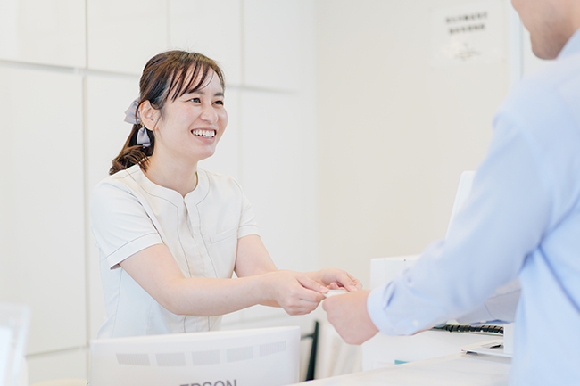
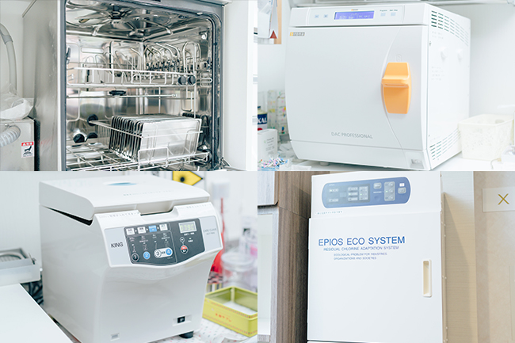
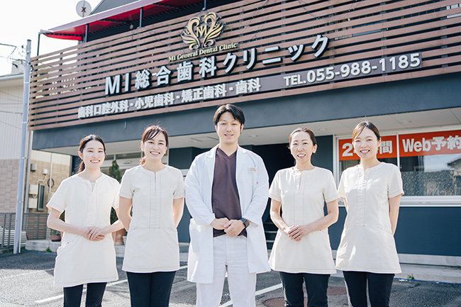
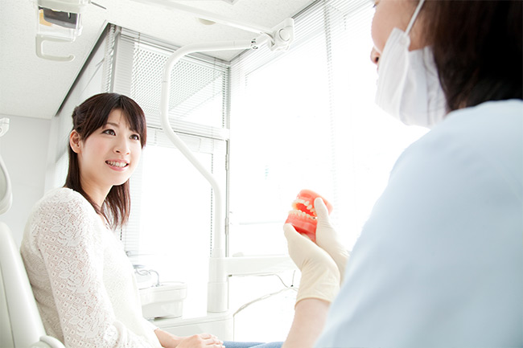

患者様が安心して通える歯医者を選びましょう
2019年の厚生労働省の発表によると、日本には約68,500軒の歯医者があるそうです。この数はコンビニ店舗数よりも多いといわれています。そのため、「どの歯医者に行けばいいのか分からない」という方もいらっしゃるでしょう。こちらでは、三島駅・下土狩駅から近い歯医者「MI総合歯科クリニック」が考える歯科医院の選び方8つのポイントに絞ってご紹介したいと思います。
歯医者選び8つのポイント
私たちのまわりには、たくさんの歯科医院があります。残念ながらすべての歯科医院が通いたくなる歯科医院ではありません。歯科医師の立場で考えて、自分や家族が受けたい治療を行う歯医者をおすすめし、選んでいただきたいと思います。その見分け方のポイントをご紹介します。
POINT1 治療方針・方法をしっかり説明してくれるか？
歯科医院は医療機関です。そのため、患者様に対して治療の目的や手段などを正確に伝える義務があります。「治療・処置内容について詳しく説明をしてくれない」また「勝手に治療を進めてしまう」歯医者は、やめておいたほうがよいでしょう。
当院の取り組み
患者様とのカウンセリングを丁寧に行い、症状やお悩みを細かく伺い、ご要望を把握します。また、不安がある治療の内容を分かりやすくご説明し、不明点をなくし安心して診療を受けていただけるように心がけます。このプロセスなしには、一人ひとりの患者様に合う治療計画のご提案はできません。治療前のご説明とともに治療後のご説明も丁寧に行います。
POINT2 経験にもとづいた説明ができているか？
治療法などを説明する際に、経験にもとづいたうえでの解説を行ってくれる歯科医師は信頼がおけるでしょう。歯医者の腕はどれだけ多くの患者様と向き合ってきたかに左右されるものです。実績の多い歯科医師はそれだけ腕も確かだといえます。
当院の取り組み

当院の理事長は外部の勉強会に講師として呼ばれるほど、治療の知識が豊富です。また、インプラントにおいては、日本口腔インプラント学会専門医取得、ICOI 認定医（International Congress of Oral Implantologists）取得、ISOI認定医（International Society of Oral Implantology）取得など、さまざまな資格を有しています。この経験や知識をもとに綿密な治療計画や患者様に合う治療の方法を複数ご提案します。
POINT3 治療を行う本人がカウンセリングを行っているか？
実際に治療計画を立て、治療を行うのは歯科医師です。当然、カウンセリングも医師本人が行わなくては患者様もじっくりお話ができないうえ、医師からの説明が不足しやすいので注意が必要です。
予防やメインテナンスについては、歯科衛生士が治療を行う場合もあります。このような場合は歯科衛生士とコミュニケーションをとることでお互いに状況を把握することができます。
当院の取り組み

歯科衛生士は口腔ケアのプロフェッショナルで、虫歯や歯周病、そしてその予防に関する知識が豊富です。そのため基本的な治療（虫歯、予防など）については、歯科衛生士がカウンセリングを行います。そしてインプラント治療などの複雑なケースについては歯科医師自らがカウンセリングを行っています。
POINT4 幅広い治療内容を提案してくれるか？
たとえば自費診療を強くすすめてくるような歯医者には注意が必要です。自費診療は機能的にも見た目の自然な美しさにも優れてはいますが、費用が高額となりがちです。こうしたデメリットについても丁寧に説明を行い、さらにいろいろな治療方法を提案してくれる歯医者は信頼しても大丈夫でしょう。
当院の取り組み

患者様のご要望をじっくり伺ったうえで、メリット・デメリットを含めて治療法の選択肢をご説明します。そしておおよその治療期間や治療費用などもご案内します。提案させていただいた治療からご検討いただき、患者様が治療に対してご理解と納得をした上で治療へ進みます。
POINT5 治療後のケアについても説明してくれるか？
歯科治療は、治ったら終わりではありません。治療後の経過を見守り、再発を防止し健康を守ることが大切です。そのため、治療後の定期検診やメインテナンスについてしっかりご説明することが求められます。
当院の取り組み

虫歯や歯周病は再発しやすい病気です。とくに治療後は毎日のセルフケアを行い、さらに定期検診でサポートを受けることをおすすめします。そのため当院では、メインテナンスに力を入れ、患者様のお口の状況に合わせて、口腔ケアのプロフェッショナルの歯科衛生士がセルフケアのポイントなどをご説明します。
POINT6 待ち時間は長くないか？予約制をとっているか？
あまりに待ち時間が長い歯科医院は、患者様の診療に時間をかけていない可能性があります。予約制を採用し、余裕を持って治療を行っているような歯医者のほうがしっかりとした治療を受けられる可能性が高いでしょう。
当院の取り組み

初診とメインテナンスではWEB予約を導入し24時間の受付対応です。それは患者様の待ち時間が長くならないようにするためでもありますが、診療の準備を整えるためでもあります。お待たせしないように常に心がけていますが、診療の混雑によっては多少お待たせすることもありますのでご了承ください。
POINT7 衛生管理が行き届いているか？
滅菌されていない診療器具を使っているような歯科医院は医療機関として失格です。すべての医療器具の滅菌はもちろんのこと、コップやエプロンを使い捨てにしたり、歯科医や歯科衛生士がゴム手袋を着用したりしているところを選ぶようにしましょう。
当院の取り組み

院内の衛生管理を徹底しています。クラスB滅菌機やミーレジェットウォッシャー、タービン用滅菌機を使用して、それぞれの治療器具の特性に合わせて清潔に保ちます。院内で使用する水にこだわり、採用しているのがエピオスのエコシステムです。洗浄・殺菌 の2つの機能を持ち、バイオフィルム・プラークを分解・洗浄したあとに殺菌力が高める歯科治療水をつくりだします。
POINT8 受付の対応は気持ちがよいか？
歯医者は通いやすさも大切です。もし、受付での対応が悪いとそれだけで足が遠のいてしまいます。患者様を大切にし、気持ちのよい対応をしてくれるようなところを探すようにしましょう。
当院の取り組み

歯医者に気持ちよく通っていただけるように、いつも明るい笑顔を心がけています。おもてなしの心を忘れずに、患者様をお迎えします。
安心できる歯医者と出会うためにもセカンドオピニオンも考えましょう
歯科診療において治療法はひとつとはかぎりません。患者様のお口の状況やご要望に合う治療を受けるためには、さまざまな選択肢の中からどの治療法がよいかを選ぶことが大切です。この治療計画は、どこの歯科医院でも同じになるとはかぎらないのをご存じでしょうか？ それはその歯科医師の考え方や使用できる設備、治療技術などに左右されるからです。
今通っている歯科医院での診断に疑問をお持ちではありませんか？ その際にはセカンドオピニオンをご検討ください。
セカンドオピニオンとは？

セカンドオピニオンとは？
患者様に合う治療を受けるために、複数の医師に意見を聞くことを「セカンドオピニオン」を得るといいます。先生によって、得意分野が異なるので、同じ症状でも別の治療計画をご提案できることがあるのです。大切なのは患者様が納得なさった治療を受けることですので、今の治療や治療計画に不安がある方は、セカンドオピニオンを求めることをおすすめします。
セカンドオピニオンを積極的に利用しましょう
セカンドオピニオンを積極的に利用しましょう
「ほかの歯科医院に行くのは、なんだか気が引ける」という方もいらっしゃるでしょう。しかし、患者様に合う治療を受けるために、ほかの先生に意見を求めることは、患者様の持つ権利で、そして大切な選択肢であり、医療界で認知されているシステムです。納得できる治療を受けるために、積極的に活用してください。それが、患者様が安心して通える歯科医師との出会いになるかもしれません。
セカンドオピニオンを利用するメリット
- ほかの専門家の意見を詳しく聞ける
- 治療内容の知識がより深まる
- 客観的な説明が受けられる
- 自分に合う治療法の選択肢が広がる など
大切なのは不安なまま、そして納得のいかないままの状態で治療を受けないことです。不安なままでは、どんなにすばらしい治療を受けても、患者様にとって満足がいかないかもしれないからです。それでは治療の意味が半減してしまいます。納得し積極的に治療が受けられるように、セカンドオピニオンを活用しましょう。